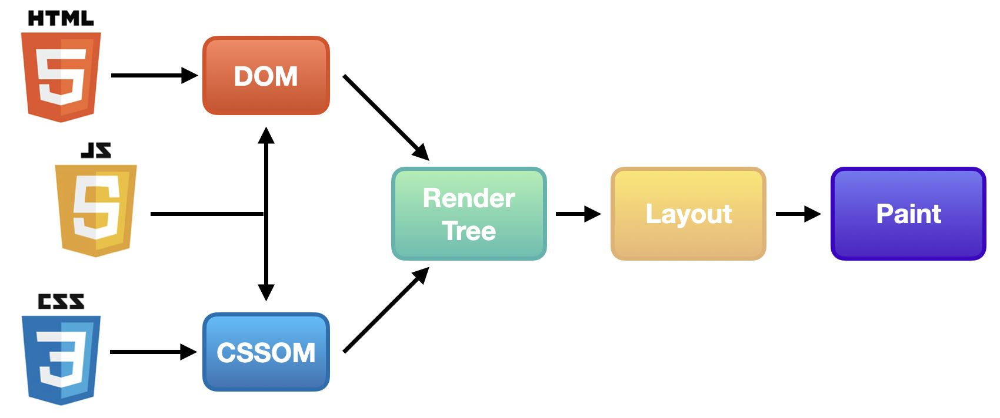
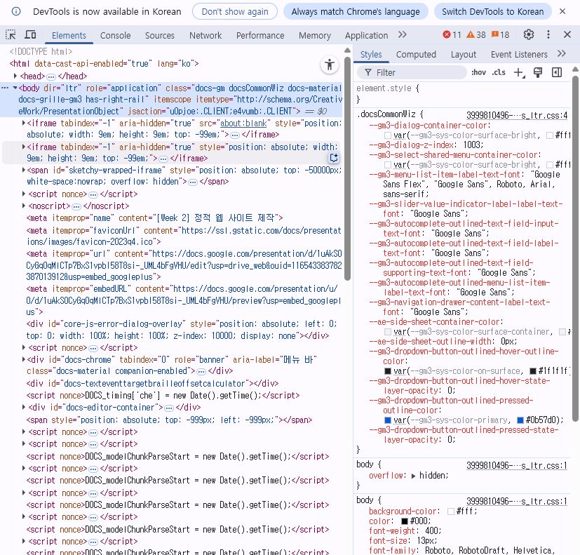
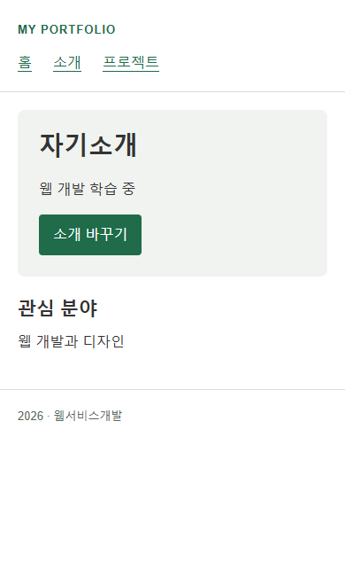
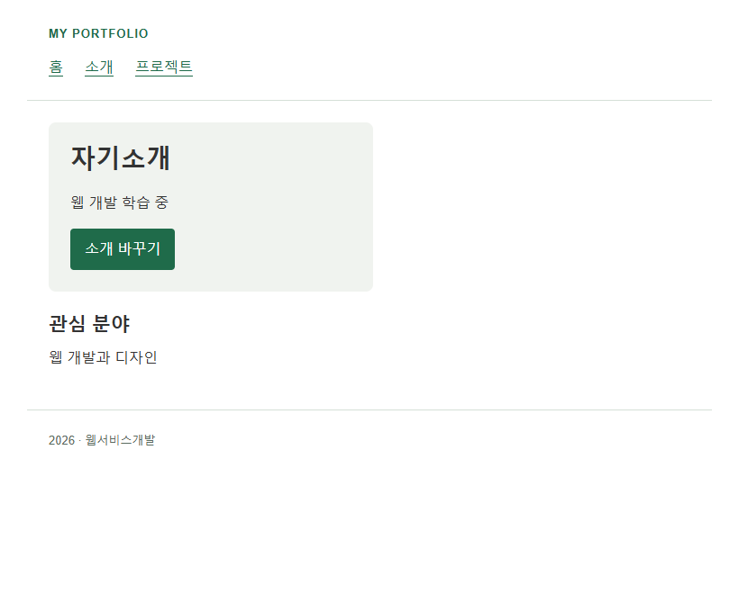

2026학년도 2학기 실전웹서비스개발
실전 웹서비스개발 – 2주차
웹 페이지의 구성 요소와 렌더링 원리
LECTURE 02
학습 목표
- 웹 페이지의 구성 요소 HTML·CSS·JavaScript의 구조·표현·동작 역할 구분
- 웹 브라우저 렌더링 DOM부터 페인트까지의 과정과 CSR·SSR·SSG, 성능의 중요성 설명
- 시맨틱 HTML과 라우팅 요소의 의미와 접근성, URL 구조와 페이지 탐색 방식 설명
- 웹 브라우저 개발자 도구 DOM·스타일·메타데이터, 뷰포트와 HTTP 응답 확인
- Svelte·SvelteKit 개발 JavaScript·TypeScript로 컴포넌트·상태·이벤트·라우팅·API 구현
01
웹 페이지의 구성 요소와 역할
HTML · CSS · JavaScript
HTML · CSS · JavaScript의 역할
HTML은 구조, CSS는 표현, JavaScript는 동작을 담당
index.html
자기소개
웹 개발 학습 중
버튼 클릭 → 소개 문구 변경
HTML
구조index.html
제목 · 소개 문단 · 버튼을 HTML 요소로 정의
h1 · p · button 등의 요소와 속성
CSS
표현style.css
같은 요소에 글꼴 · 여백 · 색상 · 버튼 모양 지정
선택자로 대상 지정 · 속성과 값으로 스타일 선언
JavaScript
동작script.js
버튼 클릭에 반응해 표시할 소개 문구 선택
데이터와 함수로 처리 · 브라우저 API로 화면에 반영
HTML (HyperText Markup Language)
웹 문서의 구조와 내용을 기술
요소 (Element)
태그로 표현하는 문서의 구성 단위
속성 (Attribute)
시작 태그에 작성하는 요소의 추가 정보
문서 선언과 주요 태그
<!DOCTYPE html>- 브라우저의 표준 모드 사용을 위한 문서 선언
<html>- 웹 문서 전체를 감싸는 최상위 루트 요소
<head>- 문서 제목 · 인코딩 · 스타일 등 메타데이터를 담는 영역
<meta>- 문자 인코딩 · 뷰포트 등 문서의 부가 정보를 지정
<body>- 제목 · 문단 · 이미지 등 화면에 표시할 콘텐츠를 담는 영역
index.html
<!DOCTYPE html>
<html lang="ko">
<head>
<meta charset="UTF-8" />
<meta name="viewport" content="width=device-width, initial-scale=1" />
<title>자기소개</title>
<link rel="stylesheet" href="style.css" />
<script src="script.js" defer></script>
</head>
<body>
<main>
<section>
<h1>자기소개</h1>
<p id="intro">웹 개발 학습 중</p>
<button id="change" type="button">소개 바꾸기</button>
</section>
</main>
</body>
</html>
학습 참고 자료 : w3schools.com/html
CSS (Cascading Style Sheets)
웹 문서의 색상 · 글꼴 · 배치를 지정
선택자 (Selector)
스타일을 적용할 대상을 가리키는 부분
선언 (Declaration)
중괄호 안에 작성하는 속성과 값의 한 쌍
선택자와 선언 예시
- 태그 · 클래스 · ID
h1, .btn, #app- 결합자: 자식, 자손, 형제
-
>, (공백) , +, ~ - 상태 · 의사클래스
:hover, :focus-visible, :disabled- 의사요소
::before, ::after- 선언 블록
-
{ color: #111; margin-top: 8px; }여러 선언을 중괄호로 묶어 구성
style.css · body / main
body {
font:
16px/1.6 Arial,
sans-serif;
color: #333;
}
main {
max-width: 800px;
margin: 2rem auto;
padding: 0 1rem;
}
style.css · section / button
section {
padding: 2rem;
border-radius: 8px;
background: #f0f3ef;
}
button {
padding: 0.6rem 1rem;
border: 0;
border-radius: 6px;
background: #1f6b4a;
color: white;
}
button:hover {
background: #174f37;
}
학습 참고 자료 : w3schools.com/css
JavaScript
데이터 처리와 실행 흐름을 표현하는 프로그래밍 언어 · 브라우저 API와 연결해 페이지 기능 구현
데이터 처리
변수에 값 저장 · 조건과 반복으로 처리 · 함수로 작업 재사용
이벤트 반응
클릭 · 입력 · 페이지 로드 등의 이벤트에 실행할 함수 연결
브라우저 API 활용
DOM으로 문서 변경 · fetch로 데이터 요청 · storage로 값 저장
소개 문구 선택과 함수 호출
const messages = [
'웹 개발 학습 중',
'HTML · CSS · JavaScript로 페이지 제작 중'
];
function getIntroduction(index) {
return messages[index];
}
const introduction = getIntroduction(1);
console.log(introduction);
학습 참고 자료 : w3schools.com/js
02
웹 브라우저의 렌더링 원리
코드의 요소·규칙이 문서 모델과 화면으로 바뀌는 과정
웹 브라우저 렌더링 과정
- HTML 파싱 → DOM 트리
- CSS 파싱 → CSSOM 트리
- DOM + CSSOM → Render Tree
- Layout (위치, 크기 계산)
- Paint (픽셀로 그리기)

DOM (Document Object Model)
HTML 문서를 객체 트리로 표현하고, 프로그램이 문서의 구조와 내용을 읽고 변경할 수 있게 하는 인터페이스
<section class="profile"> <h1>자기소개</h1> <p id="intro" aria-live="polite">웹 개발 학습 중</p> <button id="change" type="button">소개 바꾸기</button> </section>
mainsection
h1자기소개
pid="intro"
#text: 웹 개발 학습 중
buttonid="change"
#text: 소개 바꾸기
CSSOM (CSS Object Model)
CSS 스타일시트와 규칙을 객체로 표현하고, 프로그램이 이를 읽고 변경할 수 있게 하는 인터페이스
body {
color: #333;
}
button {
background: #1f6b4a;
}
button:hover {
background: #174f37;
}
CSSOM · style.css
선택자와 선언(속성·값)으로 구성된 규칙 객체
bodycolor: #333
buttonbackground: #1f6b4a
button:hoverbackground: #174f37
매칭 (Matching)
선택자 조건을 만족하는 요소를 찾는 과정
마우스를 올린 버튼 → button · button:hover 모두 해당
캐스케이드 (Cascade)
같은 요소·속성에 겹치는 선언 중 우선순위로 적용값 결정
이 예제에서는 더 구체적인 button:hover의 배경색 #174f37 적용
상속 (Inheritance)
color처럼 상속되는 속성에 선언이 없으면 부모 요소의 값 사용
color를 지정하지 않은 p → body의 글자색 #333 상속
렌더 트리 (Render Tree)
DOM의 요소에 CSSOM의 스타일을 반영해, 화면에 그릴 대상을 구성한 트리
DOM · 요소와 내용
section.profile
-
2
h1자기소개
-
3
p#intro웹 개발 학습 중
-
4
button#change소개 바꾸기
CSSOM · 스타일 규칙
style.css.profilebackground: #f0f3ef
h1font-size: 28px
buttonbackground: #1f6b4a · color: white
Render Tree
section.profilebackground: #f0f3ef
-
2
h1font-size: 28px자기소개
-
3
p#intro웹 개발 학습 중
-
4
button#changebackground: #1f6b4a · color: white소개 바꾸기
portfolio/about.html · portfolio/style.css — 자기소개 영역의 주요 요소·스타일
레이아웃: 위치와 크기 계산
CSS 값이 실제 박스의 치수와 자식 요소의 위치를 결정
* {
box-sizing: border-box;
}
.profile {
width: 360px;
max-width: 100%;
padding: 24px;
background: #f0f3ef;
border-radius: 8px;
}
실측: 카드 안의 버튼 위치 · 좌표 원점은 카드의 왼쪽 위
나의 첫 웹사이트 제작 중
y: 118.0px
border-box · 360 − 24 − 24 = 콘텐츠 폭 312px · 테두리 없음
페인트
레이아웃에서 계산한 위치와 크기에 따라 요소의 배경·글자·테두리를 그리는 과정
.profile {
background: #f0f3ef;
}
button {
background: #1f6b4a;
color: white;
}
레이어 경계는 DOM 태그와 1:1 관계가 아님 · 아래 레이어 표현은 개념도
웹 브라우저 렌더링 방식
주요 콘텐츠를 생성하는 위치와 시점의 차이
CSR · 클라이언트 렌더링
HTML 골격 → JavaScript → 브라우저에서 UI 생성
- 실행 후 상태 변경에 따라 화면 갱신
- 초기 콘텐츠 표시에 JavaScript 다운로드·실행 필요
- 검색 처리 시 JavaScript 렌더링 지원·실행 비용 고려
용례: 상호작용이 많은 피드·대시보드
SSR · 서버 렌더링
요청 → 서버에서 HTML 생성 → 브라우저에 제공
- 초기 응답에 주요 콘텐츠 포함
- 서버 처리 시간·부하·캐시 전략 고려
- 화면 표시와 상호작용 준비 시점은 다를 수 있음
용례: 요청 시점의 데이터가 필요한 페이지
SSG · 정적 사이트 생성
빌드 시 HTML 생성 → 정적 파일 제공
- 요청마다 HTML을 생성할 필요 없음
- CDN 캐싱에 적합 · CDN은 필수 조건이 아님
- 미리 생성한 콘텐츠 변경에는 재생성 필요
용례: 문서·블로그·마케팅 페이지
SSR·SSG의 초기 HTML과 클라이언트 갱신을 조합 가능 · 속도와 SEO는 코드·콘텐츠·네트워크·캐시에도 좌우됨
웹 브라우저 렌더링 성능
로딩·상호작용·화면 안정성이 사용자 경험에 미치는 영향
Core Web Vitals · LCP / INP / CLS
LCP · Largest Contentful Paint
뷰포트 안의 가장 큰 이미지·텍스트 콘텐츠가 표시되는 시점 · 로딩 성능
INP · Interaction to Next Paint
클릭·탭·키보드 입력부터 다음 화면 표시까지의 지연을 바탕으로 상호작용 응답성 평가
CLS · Cumulative Layout Shift
페이지 이용 중 예기치 않은 레이아웃 이동 점수 · 세션 윈도 합계 중 최댓값
FCP는 첫 텍스트·이미지 등의 표시 시점인 보조 로딩 지표
로딩 지연과 이탈 확률
Google/SOASTA 모바일 연구 · 2017년 · 1초 로딩 대비 상대 증가
| 로딩 시간 변화 | 이탈 확률 증가 |
|---|---|
| 1s → 3s | +32% |
| 1s → 5s | +90% |
| 1s → 6s | +106% |
절대 이탈률이 아닌 상대 증가율 · 모든 사이트에 같은 값이 적용되는 법칙이 아님
성능 개선은 사용자 경험과 검색 품질에 도움 · 특정 검색 순위나 전환율을 보장하지 않음
03
시맨틱 HTML과 라우팅
시맨틱 HTML
콘텐츠의 의미와 역할에 맞는 HTML 요소로 문서 구조를 표현하는 방식
요소가 전달하는 문서의 역할
<header>문서·구역의 소개<nav>주요 탐색 링크<main>페이지의 주요 콘텐츠<article>독립적으로 이해할 수 있는 콘텐츠
<aside>주변 콘텐츠에 부수적으로 관련된 내용
<footer>문서·구역의 작성자·저작권 등
div는 의미가 정해지지 않은 컨테이너다. class="nav"만으로 탐색 영역의 의미가 생기지는 않는다.
검색엔진의 콘텐츠 이해
검색엔진은 콘텐츠와 HTML 구조를 분석하며, 의미에 맞는 요소는 문서의 역할을 전달하는 데 도움을 준다.
접근성 트리
브라우저가 DOM과 CSS·ARIA 정보를 바탕으로 요소의 역할·이름·상태 등을 구성해 보조 기술에 제공하는 트리
콘텐츠에 맞는 요소 사용 → 문서 영역 탐색 지원 · 코드의 의미와 가독성 개선
SEO Search Engine Optimization
검색엔진이 콘텐츠를 발견·이해해 관련 검색 결과에 제공할 수 있도록 개선하는 과정.
AEO Answer Engine Optimization
질문에 직접 답하는 검색·응답 시스템이 콘텐츠를 답변으로 활용하기 쉽도록 정리하는 과정.
GEO Generative Engine Optimization
생성형 AI의 답변에서 콘텐츠가 활용·인용될 수 있도록 내용과 구조를 개선하는 과정.
라우팅과 URL 구조
라우팅은 URL 경로에 맞는 페이지나 요청 처리 코드를 선택하는 과정
https스킴example.com호스트/blog/2024/first-post경로 전체 (path)
?sort=date쿼리 · sort의 값은 date#comments프래그먼트경로 세그먼트와 라우트 매개변수
blog · 2024 · first-post는 각각 /로 구분된 경로 세그먼트
/blog/[year]/[slug]/blog/2024/first-postyear = "2024"
slug = "first-post"
[year]·[slug]처럼 매개변수로 정의한 부분이 동적 세그먼트다. URL의 값만 보고 동적 여부를 판단할 수는 없다.
URL에 맞는 페이지 선택
/about쿼리와 프래그먼트
?sort=date: 요청에 포함되는 쿼리. 정렬 등 추가 조건을 전달하는 데 사용할 수 있다.
#comments: 예를 들어 id="comments"인 요소로 이동한다. 프래그먼트는 HTTP 요청에 포함되지 않으며 브라우저에서 처리한다.
서버 라우팅과 클라이언트 라우팅
페이지 이동 시 새 HTML 문서를 로드하거나, 기존 문서를 유지하며 화면을 전환
새 문서로 이동 · 전형적인 MPA
- 링크 선택 → /about 요청
- 서버가 경로에 맞는 HTML 응답 제공
- 브라우저가 새 문서를 로드하여 표시
- 브라우저가 URL·방문 기록 관리
HTML은 정적 파일이거나 서버가 생성한 결과일 수 있다. 새 문서 탐색이 항상 깜빡임이나 느린 전환을 뜻하지 않는다.
기존 문서에서 전환 · SPA 방식
- 링크 선택 → 클라이언트 라우터가 경로 처리
- 필요한 데이터·코드 준비 (기존 자료 재사용 가능)
- 기존 문서에서 해당 화면으로 전환
- 라우터가 URL·방문 기록 갱신 및 뒤로 가기 처리
SPA는 하나의 HTML 문서를 유지하며 여러 URL의 화면을 전환한다. JSON 요청은 매번 필요한 조건이 아님.
렌더링과의 관계
SSR·CSR은 콘텐츠 생성 위치의 구분이다. 첫 요청은 SSR, 이후 이동은 클라이언트 라우팅으로 조합할 수 있다.
속도
문서·UI 재사용은 빠른 전환에 유리하다. 실제 속도는 JavaScript 양·데이터 요청·캐시 등에 따라 달라진다.
SEO
라우팅 방식만으로 결정되지 않는다. 각 URL의 콘텐츠·링크·메타데이터를 검색엔진이 읽을 수 있어야 한다.
04
웹 브라우저 개발자 도구

문서 요소와 메타데이터
Elements 패널에서 현재 DOM의 구조·속성과 요소에 적용된 스타일 확인
Chrome 개발자 도구 열기 · Windows: F12 / Ctrl+Shift+I · macOS: ⌥⌘I
Elements에서 확인
- 화면의 요소를 우클릭 → 검사(Inspect)
- 선택된 DOM 노드의 태그·속성·부모와 자식 확인
- header · nav · main · footer의 문서 역할 확인
- Styles: 적용 규칙 · Computed: 계산된 스타일 확인
Elements는 JavaScript 변경이 반영된 현재 DOM을 표시한다. 서버가 보낸 HTML과 다를 수 있다.
문서 구조와 확인 위치
html
head
title → 문서 제목 meta[name="description"] → 페이지 설명 meta[name="viewport"] → 모바일 뷰포트 설정
body
header · nav → 소개·탐색 영역 main → 주요 콘텐츠 footer → 문서 관련 정보
head를 펼쳐 title·meta의 내용을 확인한다. 요소의 존재만으로 검색 노출이나 순위가 보장되지는 않는다.
반응형 레이아웃과 뷰포트
Device Toolbar에서 뷰포트의 너비·높이를 바꾸며 배치와 넘침 확인
개발자 도구에서 Device Toolbar 전환 · Windows: Ctrl+Shift+M · macOS: ⇧⌘M
뷰포트별 확인
- Dimensions에서 Responsive 또는 기기 프리셋 선택
- 너비·높이 변경 · 회전 버튼으로 세로/가로 전환
- 메뉴·문단의 줄바꿈과 이미지 크기 확인
- 가로 스크롤·콘텐츠 잘림·요소 겹침 확인
너비·높이는 CSS 픽셀 기준이다. 실제 기기의 물리 픽셀 해상도와 구분한다.
Device Mode는 화면과 입력 환경의 시뮬레이션이다. 실제 모바일 브라우저에서도 확인이 필요하다.


같은 자기소개 페이지 · 뷰포트 너비 390 / 820 CSS px
원본 HTML과 응답 헤더
Network 패널에서 문서 요청을 선택해 응답의 형식과 HTML 본문 확인
Network → 페이지 새로고침 → Doc 필터 → 현재 페이지 URL의 문서 요청 선택
Headers · 응답 정보
Request URL
Status Code
Content-Type: text/html; charset=utf-8HTML 응답 헤더의 예시
- Request URL: 확인하려는 문서의 주소인지 확인
- Status Code: 응답 상태 확인 (예: 200 OK)
- Content-Type: text/html은 HTML 형식, charset=utf-8은 문자 인코딩 선언
charset이 헤더에 없을 수도 있다. HTML의 meta charset 등 인코딩 선언도 함께 확인한다.
Response · HTML 본문
응답으로 받은 HTML
파싱·변경 후 현재 DOM
- Response 탭에서 문서 응답의 HTML 확인
- title·meta·본문 콘텐츠가 응답에 포함되는지 확인
- Elements와 비교해 응답 HTML과 현재 DOM의 차이 확인
Doc 목록의 첫 항목으로 단정하지 않고 URL로 선택한다. 클라이언트 라우팅은 새 문서 요청 없이 동작할 수 있다.
05
웹 프레임워크를 활용한 개발
Svelte · SvelteKit · 컴포넌트 · 데이터
웹 개발 프레임워크
반복 작업과 프로젝트 구조를 위한 규칙·도구
제공 기능의 예
- 구조: 폴더·파일 규칙, 역할별 코드 분리
- 요청 처리: 라우터·미들웨어·입력 검증·인증 연동
- 데이터: 로드 함수·데이터베이스 접근 도구
- 빌드·실행: 번들링·코드 분할·렌더링·배포
기능은 프레임워크마다 다르며 추가 라이브러리가 필요할 수 있음
개발 영역별 도구
UI 라이브러리·프레임워크
React · Vue · Angular · Svelte
백엔드 프레임워크
Express · NestJS · Django · FastAPI · Spring Boot
풀스택 프레임워크
Next.js · Nuxt · SvelteKit
선택 기준: 팀의 언어·경험, 필요한 렌더링·서버 기능, 호스팅 환경, 문서·생태계·유지보수
Node.js 실행 환경
V8 엔진을 사용해 브라우저 밖에서 JavaScript 실행
실행 환경과 용도
- 개발 서버·빌드 도구·CLI·서버 프로그램 실행
- 브라우저의 document·window 대신 파일·프로세스 등 서버 API 사용
- npm으로 프로젝트 의존성과 실행 명령 관리
console.log('Hello from Node.js');
node hello.js
비동기 I/O와 이벤트 루프
- I/O 완료를 기다리는 동안 다른 요청의 작업 진행 가능
- JavaScript 콜백은 주로 하나의 이벤트 루프에서 처리
- 일부 I/O·연산은 운영체제와 worker pool 등이 처리
- 긴 동기 연산은 이벤트 루프를 막아 다른 요청도 지연
비동기 구조만으로 높은 성능·적은 메모리가 보장되지는 않음
실습 환경: Node.js 24 · node -v / npm -v로 확인
CLI · 명령줄 인터페이스
텍스트 명령으로 도구를 실행하고 작업을 자동화하는 인터페이스
터미널·셸·경로
터미널
입력·출력을 표시하는 프로그램 · Windows Terminal, macOS Terminal
셸
명령을 해석·실행하는 프로그램 · PowerShell, bash, zsh
경로와 현재 작업 디렉터리
Path: 파일·폴더의 위치 표기 · cwd: 상대 경로 해석의 기준 폴더
프롬프트: 입력 대기 표시 · . 현재 폴더 · .. 상위 폴더 · ~ 홈 폴더
프로젝트에서 명령 실행
cd pwd-week2 node -v npm -v npm run dev
- 같은 절차를 스크립트로 반복·자동화
- 버전·입력·환경을 고정해 재현성 향상
- 같은 명령도 작업 폴더·설정·버전에 따라 결과가 달라짐
npm과 npx
프로젝트 의존성 관리와 패키지 명령 실행
npm · 패키지와 스크립트 관리
- package.json: 의존성과 scripts 정의
- package-lock.json: 재현 가능한 설치를 위한 버전 기록
- npm install: 의존성 설치 · npm run dev: dev 스크립트 실행
npm --version npm install npm run dev
받은 실습 소스는 npm ci로 잠금 파일에 맞춰 설치
npx · 패키지 명령 실행
별도의 전역 설치 없이 명령 실행 · 로컬 패키지를 사용하거나 필요 시 npm 캐시에 설치
npx sv@0.17.0 create pwd-week2 cd pwd-week2 npm run dev
새 프로젝트 생성 명령 · 이미 받은 프로젝트에서 다시 실행하지 않음
PowerShell 실행 정책 오류 시 npm.cmd·npx.cmd 사용
Svelte와 SvelteKit
HTML·CSS와 JavaScript 또는 TypeScript로 UI와 웹 애플리케이션 개발
Svelte · UI 프레임워크
컴파일러가 컴포넌트를 브라우저에서 실행할 JavaScript·CSS로 변환
Virtual DOM 비교 대신 컴파일된 코드와 런타임으로 DOM 갱신
컴포넌트·반응형 상태·이벤트·스타일 제공
컴파일러 기반이어도 런타임 코드가 존재하며, 번들 크기와 성능은 앱에 따라 달라짐
SvelteKit · 웹 애플리케이션 프레임워크
파일 기반 라우팅·데이터 로드·서버 API·배포 기능 제공
SSR·사전 렌더링(SSG)·클라이언트 탐색 지원
Svelte와 SvelteKit 모두 JavaScript·TypeScript 지원 · TypeScript는 선택 사항
JavaScript
<script> … </script>
컴포넌트는 .svelte · 로드·API 파일은 .js
TypeScript
<script lang="ts"> … </script>
컴포넌트는 동일하게 .svelte · 로드·API 파일은 .ts도 지원
프론트엔드 UI 개발 방식 비교
문법·반응성·DOM 갱신 방식의 차이
| 비교 항목 | React | Vue | Svelte |
|---|---|---|---|
| UI 작성 | JSX | Template / JSX | .svelte |
| 상태·반응성 | useState / useReducer | ref / reactive | $state / $derived |
| DOM 갱신 | 렌더 결과 재조정 | 반응성·컴파일된 렌더 함수 | 컴파일된 갱신 코드 |
| 개발 언어 | JavaScript / TypeScript | JavaScript / TypeScript | JavaScript / TypeScript |
번들 크기와 실행 성능
앱 기능·의존성·빌드 설정·측정 환경을 맞춰 비교해야 하며, 프레임워크 이름만으로 우열을 결정할 수 없음
학습·유지보수 관점
팀의 언어·도구 경험, 필요한 라이브러리, 문서와 장기 유지보수 요구를 함께 고려
Svelte 파일 구조와 개발 언어
같은 .svelte 컴포넌트를 JavaScript 또는 TypeScript로 작성
<script>
let name = $state('world');
let count = $state(0);
</script>
<h1>Hello {name}!</h1>
<input aria-label="Name" bind:value={name} />
<button onclick={() => count += 1}>
clicks: {count}
</button>
<style>
h1 { color: #5b3df5; }
</style>
<script lang="ts">
let name: string = $state('world');
let count: number = $state(0);
</script>
<h1>Hello {name}!</h1>
<input aria-label="Name" bind:value={name} />
<button onclick={() => count += 1}>
clicks: {count}
</button>
<style>
h1 { color: #5b3df5; }
</style>
script: 상태·함수 · 마크업: 화면 구조 · style: 컴포넌트 범위 CSS
공유 모듈 코드는 <script module>에 작성하며 모듈 평가 시 실행 · onclick에는 두 언어 모두 함수를 전달
Svelte 5는 타입 표기·interface를 지원하며, enum 등 실행 코드가 필요한 TS 문법에는 전처리 설정 필요
SvelteKit 프로젝트 구조
파일의 위치와 이름으로 페이지·공유 코드·설정의 역할 구분
pwd-week2/ ├─ src/ │ ├─ routes/ │ ├─ lib/ │ ├─ app.html │ └─ app.css ├─ static/ ├─ package.json ├─ package-lock.json ├─ svelte.config.js ├─ vite.config.js ├─ .gitignore └─ README.md
주요 파일과 폴더
- src/routes: 페이지·레이아웃·load·API 라우트
- src/lib: 재사용 코드 · $lib 별칭으로 import
- src/app.html: HTML 바깥 틀 · app.css: 가져와 적용할 전역 스타일
- static: 변환 없이 제공할 정적 파일
- 설정 파일: 패키지·SvelteKit·Vite의 동작 구성
node_modules는 설치 시 생성 · Git에 추가하지 않음
실습 프로젝트의 구조 예시 · 생성 옵션과 사용하는 도구에 따라 파일 구성은 달라질 수 있음
파일 기반 라우팅
정적 경로는 폴더명으로, 동적 경로는 [매개변수]로 정의
src/routes/about/+page.svelte → /about
export function load({ params }) {
return { id: params.id };
}
<script>
let { data } = $props();
</script>
<h1>Blog post #{data.id}</h1>
/blog/42params.id = "42"return { id: params.id }data.id = "42"[id]는 경로 매개변수를 정의 · data는 load 반환값으로 전달되므로 params와 data를 구분
중첩 경로: src/routes/dashboard/reports/[id]/+page.svelte → /dashboard/reports/42
중첩 라우팅과 공유 레이아웃
폴더 계층으로 URL을 구성하고 공통 UI와 데이터를 재사용
src/routes/
├─ +layout.svelte
├─ +layout.js
├─ +page.svelte
└─ dashboard/
├─ +layout.svelte
├─ +layout.js
├─ +page.svelte
└─ reports/
├─ +page.svelte
└─ [id]/
└─ +page.svelte
경로와 파일의 대응
routes/+page.svelte → /
dashboard/+page.svelte → /dashboard
reports/+page.svelte → /dashboard/reports
reports/[id]/+page.svelte → /dashboard/reports/42
+layout.svelte: 해당 경로와 하위 페이지의 공통 UI · children을 렌더링해 페이지 표시
하위 load에서 await parent()로 상위 레이아웃의 load 결과 재사용
모든 폴더에 +page·+layout이 필요한 것은 아님 · +layout.js는 공유 데이터가 필요할 때 추가
상태·파생값·반응형 효과
let·const 선언과 Svelte의 반응성 관련 runes
$state · 변경되는 상태
입력·토글·배열 변경을 화면에 반영
<script>
let name = $state('world');
let on = $state(false);
let list = $state(['a']);
</script>
<input aria-label="Name"
bind:value={name} />
<button onclick={() => on = !on}>
{on ? 'ON' : 'OFF'}
</button>
<button
onclick={() => list.push('item')}>
추가
</button>
<p>{name} / {list.length}</p>
$derived · 계산된 값
의존성이 바뀌면 무효화 · 값을 읽을 때 재계산
<script>
let prices = $state(
[1000, 2500, 3000]
);
let total = $derived(
prices.reduce((s, p) => s + p, 0)
);
let label = $derived(
total.toLocaleString('ko-KR') +
'원'
);
</script>
<p>{total} / {label}</p>
$effect · 외부 동작 동기화
브라우저에서 최초 실행 · 동기적으로 읽은 반응형 의존성 변경 시 재실행
<script>
let open = $state(false);
let el = $state();
$effect(() => {
if (open && el) el.focus();
});
</script>
<button onclick={() => open = !open}>
{open ? '닫기' : '열기'}
</button>
{#if open}
<input aria-label="메모"
bind:this={el} />
{/if}
표시용 파생값에는 $derived 사용 · $effect 안의 계산 자체가 금지되는 것은 아님
조건문
상태에서 등급을 계산하고, 등급에 맞는 UI를 선택
<script>
let score = $state(0);
let grade = $derived.by(() => {
if (score >= 90) return 'A';
if (score >= 60) return 'B';
return 'C';
});
</script>
<input type="number" min="0" max="100"
aria-label="Score" bind:value={score} />
{#if grade === 'A'}
<p>Excellent! (A)</p>
{:else if grade === 'B'}
<p>Good (B)</p>
{:else}
<p>Keep practicing (C)</p>
{/if}
계산된 값 · $derived.by
score 변경 → grade 재계산 → 조건에 맞는 문단 표시
if / else로 값을 계산하고 반환 · 다른 상태를 변경하지 않는 순수 계산
템플릿 조건 블록
{#if} · {:else if} · {:else}로 화면 분기
다른 상태로부터 계산할 수 있는 값은 $derived 사용 · $effect는 DOM·외부 시스템과의 동기화 등에 사용
반복문과 목록 렌더링
배열 항목을 반복 표시하고 각 항목의 상태를 갱신
템플릿 반복 블록 · {#each}
- as todo: 항목 · as todo, i: 항목과 인덱스
- (todo.id): 항목을 추적하는 고유하고 안정적인 key
- 추가 버튼: 배열에 새 항목 삽입 → 목록 갱신
- bind:checked: 체크박스와 done을 연결
스크립트의 반복·계산
for·for…of·map·forEach 등 사용 가능 · 변경에 따라 UI를 갱신할 값에 반응형 상태·파생값 사용
고정 배열도 {#each}로 표시 가능 · 모든 UI 데이터에 runes가 필수인 것은 아님
<script>
let nextId = 3;
let todos = $state([
{ id: 1, text: 'Svelte 학습', done: false },
{ id: 2, text: 'Runes 연습', done: true }
]);
function add() {
todos.push({
id: nextId++, text: '새 할 일', done: false
});
}
</script>
<button onclick={add}>추가</button>
<ul>
{#each todos as todo (todo.id)}
<li><label>
<input type="checkbox" bind:checked={todo.done} />
{todo.text}
</label></li>
{/each}
</ul>
이벤트와 처리 함수
사용자 입력과 브라우저의 이벤트에 함수를 연결
이벤트 속성
onclick={handler} · oninput={handler} · onmousemove={handler}
- click: 클릭 · input: 입력 변화 · submit: 폼 제출
- keydown: 키 입력 · mousemove: 마우스 이동
- event 객체로 입력 값·좌표 등 이벤트 정보 확인
svelte:window는 브라우저 창의 이벤트에 연결 · 해제 시 리스너 정리
<script>
let m = $state({ x: 0, y: 0 });
function handleMousemove(event) {
m.x = event.clientX;
m.y = event.clientY;
}
</script>
<svelte:window onmousemove={handleMousemove} />
<p>마우스: {m.x} × {m.y}</p>
clientX·clientY는 뷰포트 기준 CSS 픽셀 좌표
라이프사이클과 반응형 효과
마운트·해제 시 리소스를 관리하고 DOM 갱신 전후의 작업을 구분
<script>
import { onMount } from 'svelte';
let count = $state(0);
onMount(() => {
const timer = setInterval(() => count++, 1000);
return () => clearInterval(timer);
});
$effect.pre(() => {
console.log('Before DOM update:', count);
});
$effect(() => {
console.log('After DOM update:', count);
});
</script>
<h1>{count}</h1>
onMount · 마운트 이후
브라우저에서 마운트 후 실행 · SSR에서는 실행되지 않음
동기 onMount 콜백이 반환한 함수는 해제 시 실행 → 타이머 정리
$effect.pre / $effect
브라우저에서 최초 실행 후, 동기적으로 읽은 반응형 의존성이 변경되면 재실행
$effect.pre: DOM 갱신 전 · $effect: DOM 갱신 후
onDestroy도 해제 작업 등록에 사용 가능하며 SSR에서도 실행 · count는 $state로 선언해야 화면과 효과가 변경을 추적
훅과 페이지 탐색 제어
정해진 실행 시점에 콜백을 등록해 동작 확장·제어
<script>
import { beforeNavigate } from '$app/navigation';
let { children } = $props();
let dirty = $state(false);
beforeNavigate((nav) => {
if (!dirty) return;
if (nav.type === 'leave' ||
!confirm('저장하지 않고 이동?')) {
nav.cancel();
}
});
</script>
주요 실행 지점
onMount·onDestroy: 컴포넌트 생성 후·해제 시 리소스 관리
beforeNavigate: 탐색 전 검사·취소
onNavigate: 탐색 전 실행 · 반환한 함수는 DOM 갱신 후 실행
afterNavigate: 최초 마운트·탐색 완료 후 실행
load: 페이지·레이아웃의 데이터 준비
<label>작성 중인 내용
<textarea oninput={() => dirty = true}></textarea>
</label>
<main>{@render children()}</main>
앱 내부 이동: confirm 결과로 취소 · 탭 닫기 등 leave 탐색: cancel()로 브라우저 기본 이탈 확인 요청
Props · 부모에서 자식으로 전달하는 값
컴포넌트의 입력값을 $props()로 받아 화면에 사용
<script>
import Child from './Child.svelte';
let message = $state('안녕!');
</script>
<button onclick={() => message = '변경된 인사말'}>
변경
</button>
<Child msg={message} />
<script>
const { msg } = $props();
</script>
<p>{msg}</p>
부모의 값 변경은 자식에 반영 · props는 읽기 전용 입력으로 사용 · 자식에서 변경을 요청할 때 콜백 활용
양방향 바인딩
입력이 상태를 변경하고, 상태 변경이 연결된 입력과 화면에 반영
<script>
let name = $state('');
let agree = $state(false);
let color = $state('red');
let level = $state(50);
let files = $state();
</script>
<label>Name: <input bind:value={name} /></label>
<p>{name || '(empty)'}</p>
<label>
<input type="checkbox" bind:checked={agree} />
I agree
</label>
<p>{agree ? 'Yes' : 'No'}</p>
<label>Color:
<select bind:value={color}>
<option>red</option><option>green</option>
<option>blue</option>
</select>
</label>
<p>{color}</p>
<label>Level: {level}
<input type="range" min="0" max="100"
bind:value={level} />
</label>
<label>Files:
<input type="file" multiple bind:files={files} />
</label>
{#if files}<p>{files.length} files</p>{/if}
Svelte 5 runes 모드: 변경되는 값은 $state · value는 입력값, checked는 체크 여부, files는 FileList와 연결
컴포넌트와 UI 재사용
마크업·동작·상태·스타일을 묶는 재사용 가능한 UI 단위
<script>
let { title, summary, href } = $props();
</script>
<article class="card">
<h3><a href={href}>{title}</a></h3>
<p>{summary}</p>
</article>
<script>
import Card from '$lib/Card.svelte';
let { data } = $props();
</script>
<h2>Projects</h2>
{#each data.projects as p (p.slug)}
<Card title={p.title} summary={p.summary}
href={'/projects/' + p.slug} />
{:else}
<p>등록된 프로젝트 없음</p>
{/each}
입력과 합성
각 카드에 title·summary·href 전달 · 페이지에서 Card를 반복 사용
유지보수와 협업
공통 UI의 변경 위치 통합 · 독립적 테스트·역할별 코드 관리
data.projects는 페이지 load의 반환값 · 컴포넌트는 작은 버튼부터 큰 페이지까지 구성 가능
API 라우트와 요청 처리
+server.js의 HTTP 메서드 함수가 요청을 처리하고 Response를 반환
GET /api/projectssrc/routes/api/projects/+server.jsexport function GET()서버 전용 실행
+server.js 코드는 브라우저 번들에 포함되지 않음 · DB·비밀키는 서버에서 사용
응답으로 반환한 데이터는 클라이언트에 전달되므로 인증·권한 확인과 비밀정보 제외는 별도로 구현
메서드와 응답
GET·POST 등 메서드명으로 함수 export · Response 또는 json(data) 반환 · error(status, message)는 예외 발생
요청 컨텍스트
request: 요청 · url: URL·쿼리 · params: 경로 매개변수 · cookies: 쿠키
locals: 인증 사용자 등 요청별로 공유하는 서버 측 정보
페이지 데이터 로드
+page.js: 서버·브라우저에서 실행 가능한 universal load +page.server.js: 서버에서만 실행되는 load
API 응답과 페이지 데이터
API 응답을 load에서 받아 페이지 컴포넌트에 전달
import { json } from '@sveltejs/kit';
const projects = [
{ slug: 'timetable',
title: 'Timetable Helper',
summary: 'Classes and schedules' },
{ slug: 'gallery',
title: 'Image Gallery',
summary: 'A small image gallery' },
{ slug: 'memo',
title: 'Memo Pad',
summary: 'Local notes' }
];
export function GET() {
return json(projects);
}
import { error } from '@sveltejs/kit';
export async function load({ fetch }) {
const res = await fetch('/api/projects');
if (!res.ok) {
error(res.status, 'Load failed');
}
return { projects: await res.json() };
}
<script>
import Card from '$lib/Card.svelte';
let { data } = $props();
</script>
<h2>Projects</h2>
{#each data.projects as p (p.slug)}
<Card title={p.title}
summary={p.summary}
href={'/projects/' + p.slug} />
{:else}
<p>No projects yet.</p>
{/each}
GET /api/projectsload → { projects }data.projects → CardCard는 앞서 정의한 src/lib/Card.svelte를 재사용 · API 처리, 데이터 로드, 화면 마크업은 서로 다른 파일
Svelte Playground
브라우저에서 컴포넌트 코드와 실행 결과 확인
- .svelte 컴포넌트의 script·마크업·style 입력
- 상태·이벤트·바인딩을 바꾸며 출력과 비교
- 컴파일 오류·경고 메시지와 해당 코드 위치 확인
SvelteKit의 +page·+layout·API·$app 모듈 예제는 로컬 SvelteKit 프로젝트에서 실행
06
웹 서비스 배포 자동화
GitHub · 빌드·검증 · Vercel
CI/CD와 DevOps
코드 통합·검증·배포를 반복 가능한 과정으로 구성
CI · Continuous Integration
작은 변경을 공유 코드에 자주 통합하고 자동 빌드·테스트로 검증
- 통합 오류와 회귀 문제의 조기 발견
- 변경 검증·릴리스 준비 시간 단축
CD · Delivery / Deployment
Continuous Delivery
변경을 항상 배포 가능한 상태로 준비 · 운영 배포에는 사람의 결정이 남을 수 있음
Continuous Deployment
검증을 통과한 변경을 운영 환경까지 자동 배포
DevOps: 개발과 운영의 협업·자동화·피드백 문화와 실천 · 특정 직무나 도구 하나로 한정되지 않음
Vercel
웹 애플리케이션의 빌드·미리보기·배포를 위한 클라우드 플랫폼
플랫폼과 프레임워크
Next.js 개발 · SvelteKit 등 여러 프레임워크 지원
2021년 11월 Svelte 창시자 Rich Harris 합류 · Svelte 개발 지원
프레임워크 preset과 adapter가 빌드 결과를 배포 환경에 연결
주요 기능
- 정적 파일 전송·CDN·서버 함수 실행
- Git 연동에 따른 자동 빌드·배포
- 변경 사항별 Preview 배포 URL
- HTTPS 인증서·사용자 도메인·관측 도구
자동 배포가 테스트의 자동 작성을 뜻하지는 않음 · 테스트 명령과 배포 조건은 프로젝트에 설정
Vercel 프로젝트 연결과 배포
GitHub 저장소를 연결하고 배포 결과와 후속 변경을 확인
계정·저장소 연결
- Vercel 계정 생성·로그인
- 새 프로젝트에서 GitHub 연동과 저장소 권한 부여
- 배포할 저장소 Import · 프로젝트 폴더 선택
- SvelteKit 프레임워크 자동 감지 확인
설정·검증·배포
- Node.js 24.x · 필요한 환경 변수 설정
- Output Directory는 SvelteKit 자동 설정 유지
- Deploy 실행 · 빌드 로그와 배포 URL 확인
- Home·About·Projects·상세·메모 동작 확인
제출에는 대시보드의 실제 Production URL 사용 · 브랜치·설정에 따라 Preview와 Production 배포 구분
07
실습: SvelteKit을 이용한 웹사이트 제작과 Vercel 배포
실습 개요
SvelteKit을 이용한 웹사이트 제작과 Vercel 배포
학습 목표
- Node.js와 npm 환경 구축
- SvelteKit 프레임워크로 정적 사이트 제작
- Git/GitHub를 활용한 버전 관리
- Vercel을 통한 자동 배포 파이프라인 구축
요구사항
- GitHub 저장소에 프로젝트 버전 관리가 바르게 되고 있는가?
- Vercel에 GitHub 저장소가 연결되어 자동 배포가 이루어 지고 있는가?
- Vercel 배포한 웹서비스에서 제시한 프로젝트 코드가 모두 바르게 동작하는가? (Home, About, Projects)
과제 마감일
9월 20일 23:59
- GitHub 저장소 URL
- Vercel App URL
(예: https://github.com/username/pwd-week2)
(예: https://pwd-week2-[random].vercel.app)
Q&A
질의응답
웹 페이지 · 렌더링 · SvelteKit · 배포